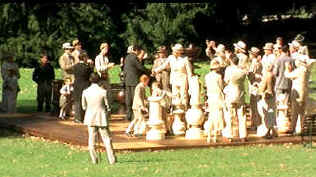

| Luzhin
Defense (SE)/B-,B |
| Columbia/2000/106/ANAN 1.85:1 |
Trying to analyze the mystery of chess master Alexander Luzhin using flashbacks to a tainted
childhood of prodigal talent and painful conflict undermines the great beauty that wants to
flourish in Marleen Gorris's The Luzhin Defense. An adaptation of a Vladimir Nabokov
Russian novella, the setting is a plush Italian resort in full 1920's bloom. A world
championship chess competition is about to begin. Luzhin is the chief contender to overthrow
reigning champion Italian Turati. The excitement of the tournament attracts spa visitor Natalia
Katkov who is vacationing with her mother. The mother, ever in search of a suitor for her daughter,
latches onto to an attractive young Count, but the independent Natalia has other ideas. On the eve
of the chess competition, Luzhin's former promoter arrives for an added element of intrigue.
 |
| Contenders meet on an oversized
chess board. ©Columbia |
I
like the chess world setting and the chess games are actually quite dynamic in their presentation.
Even the brooding study of aberrant genius is very effective when it stays grounded within the
beautiful resort setting. The romance that flowers between Luzhin and another guest at the
magnificent Italian resort is improbable, but you can go with it. In fact, it probably should have
been expanded upon. There is one wonderful montage that intercuts the flowering romance with the
ongoing chess tournament that works brilliantly. Ultimately, the slow pace of the film is
exacerbated by the muted color and internal terror of the flashbacks. They suck the magical beauty
from the film like a mad artist destroying o his own canvas. The writing is at times very
beautiful, like a good European short story. The psychological stuff is certainly Nabokovian, but
instead of adding layers of mystery, it reveals the mundane core of an onion. There are other
plot contrivances that are too farfetched and are destructive to the balance of the film. The slow
pace sometimes works against it as well.
The production is first class. The period is lushly captured in
magnificent resort settings. Design details are never in doubt. Director Gorris is right at home in
the fascinating and lively international world of high teas and life size chess boards, but she is
at a loss under the pall of the dismal flashbacks.
John Turturro does a great job of making Luzhin quite human. Nevertheless,
the character is overwhelmingly pathetic. Emily Watson is an actress grounded in reality. She is
never less than convincing in her attachment to Luzhin, but one can't help wonder where the
attraction lies? Geraldine James is annoyingly on target as the loud Katkov mother, a harridan in
fine clothes. Stuart Wilson is far too smarmy as promoter Valentinov.
The DVD has a rather inconsistent look. I watched on a new Sharp 16 x 9
DLP projector and I discount that some scenes do not play as well without the depth of CRT black
level. A number of outdoor scenes appear far too washed out exposure to the sun perhaps owing to
artistic filtering to capture a sense of another and another time. Overall, the colors are generally accurate . Sharpness is good enough to reveal the details of the handsome production
design but rather less than penetrating. The Dolby Digital 5:1 surround captures the reserved
excitement of the resort and the lush chords of Alexandre Desplat's score are treated with respect. Packaged as a special
edition, Columbia includes director Gorris's audio commentary and a making of featurette.
|
|
|
|

Selections from the Feature Archive
include articles on Akira Kurosawa, Frank
Darabont, Blonde Bimbos, Hollywood Street Gangs, or Vietnam: The
Hollywood Pariah, and many more....
Roman
Holiday
Join the editor and his family on a trip through Roman movie sites in this unusual feature.

Take a look at the merry images of America's gift to
the movies: Hollywood Musical Posters are featured from The Movie
Poster Archive.


The AV
Science Forum provides great feedback on the latest home theater equipment with a wide range of
opinions. Outstanding home theater resource.

Looking for information about widescreen movies and hardware. The Widescreen Movie Center
is the place to go.

Excellent resource for movie review links, with many early looks.

An on-line Home Theater magazine with excellent hardware reviews,
including thorough and responsible research. Check it out.

Home of The American Film Institute.

Terrific resource for learning about the ins and outs of movie
poster collecting.

The DVD Forum is an international association of hardware
manufacturers, software firms and other users of Digital Versatile Discs (the "DVD
Format"), created for the purpose of exchanging and disseminating ideas and information about
the DVD Format and its technical capabilities, improvements and innovations.
|